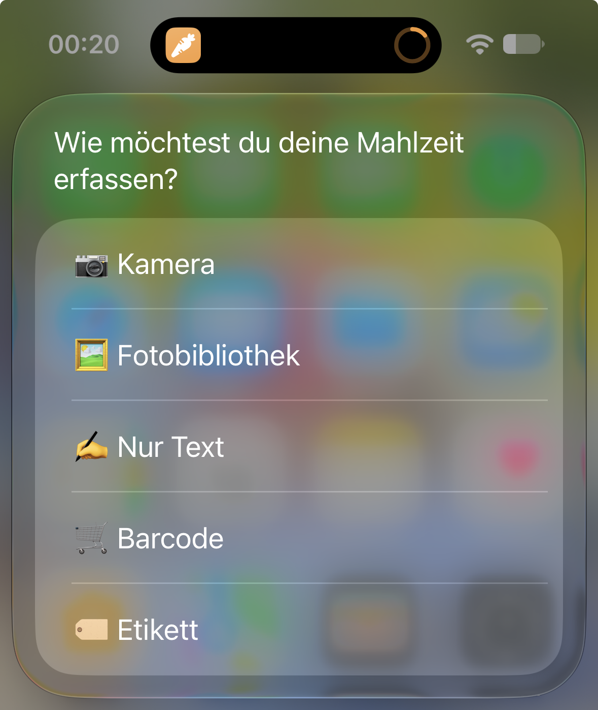
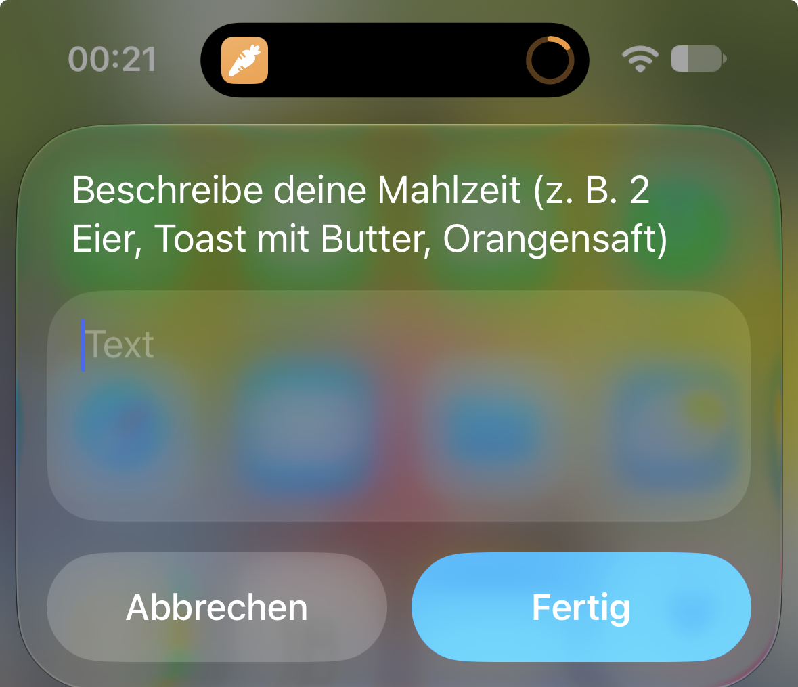
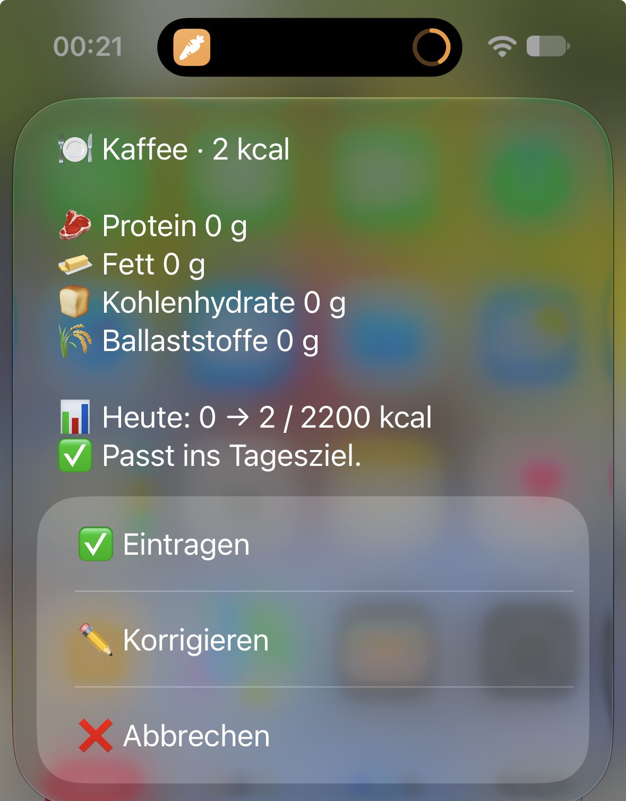
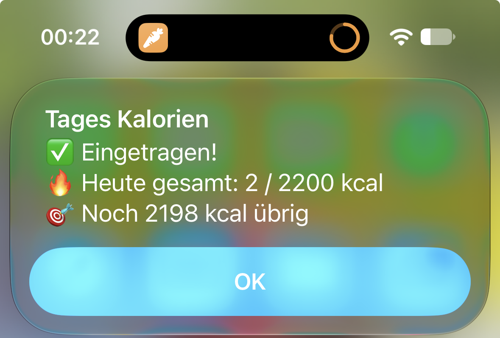

AI Kalorien v3
Foto, Text, Barcode oder Nährwert-Etikett → kcal & Makros, Coaching zum Tagesziel, HealthKit. Kostenloser Kurzbefehl.
So geht’s
- 5 Wege: Kamera, Mediathek, Text, Barcode (Open Food Facts), Etikett-OCR
- Coaching-Ampel vs. Tagesziel · Mehrfach-Korrektur · Eintrag in Apple Health
- Nur Orientierung — keine Ernährungsberatung
Kostenlos. Spenden-Link folgt später.
So sieht’s aus




Feedback
Bugs, Ideen, Übersetzungs-Wünsche? Schreib eine Mail oder nutze später das Feedback-Formular.